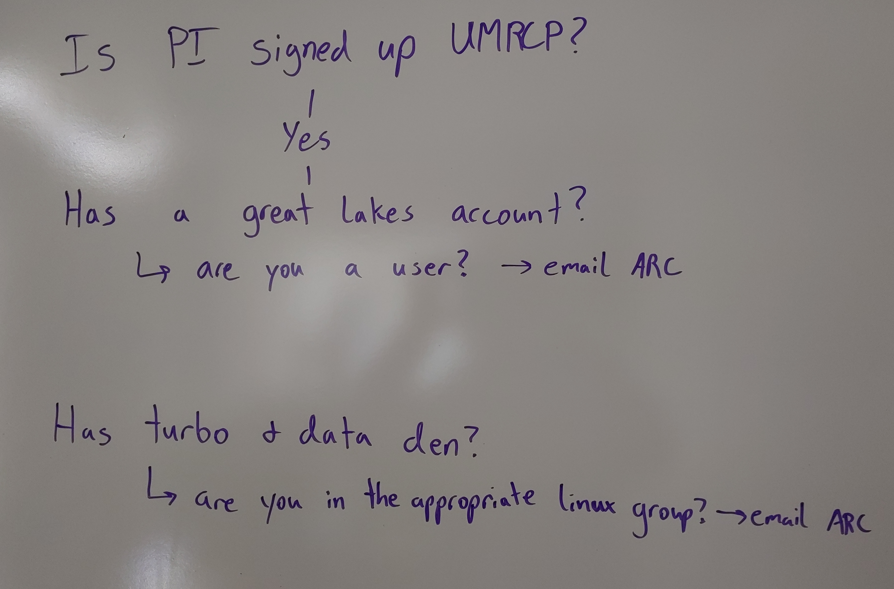

In this module, we will:
- discuss reproducible computing in general
- discuss storage best practices for raw data, anlaysis files,
scripts, etc.
- learn about the UMRCP and how to request it
- make a plan for enrolling PIs in UMRCP and enabling access to all
researchers
Reproducible Computing
Reproducible computing has become incredibly important as computing
has become more and more intertwined with research endeavors. In recent
times, it has become absolutely necessary for publication. In many
cases, in order to credibly validate an analysis, we must be able to not
only see and understand the steps of an analysis, but also to be able to
do these same manipulations ourselves.
There are a number of tools and techniques that have emerged in this
space, which when utilized will transform any analysis into one that is
reproducible.
In this workshop we’ll discuss these tools and techniques, we’ll
provide specific guidance for University of Michigan researchers to
address reproducibility concerns, and we’ll use practical examples along
the way to gain experience with the concepts that we’ve learned.
Storage Best Practices
Project Organization - documentation! separate dir for scripts, for
outputs
Separate location for raw data
Fast storage for analysis
Checking file integrity - MD5sum - AGC link on checking md5sum
Storage Options for UMich Researchers
We’ve discussed best practices for data, analysis intermediates and
scripts, etc. in general terms, but now we’ll have the opportunity to
revisit these ideas while highlighting specific options and
recommendations for UMich researchers. By the end of this module, we
will understand our numerous storage options available to us. Looking
forward to future modules, we’ll also run exercises that interact with
some of these storage allocations as we proceed, including Data Den and
its unique characteristics and usage patterns.
What is ARC?
The vast majority of computing resources we’ll be discussing in the
workshop are provided and managed by ARC - Advanced Research Computing
at University of Michigan. The shared computing cluster that we’ll be
using in the workshop is run by ARC, and the storage allocations
likewise are provided by ARC. Their mission is to provide university
researchers with the advanced computing resources that they need, and
they’ve been working with research groups in various compute intensive
fields to achieve this.
Later on we’ll discuss in detail how to request resources through
ARC, but for now we’ll focus on the storage topic and cover some
important storage options that ARC provides
Data Den
Data Den is a low-cost, highly durable storage system operated by
ARC.
Tape-based archival storage. The largest and cheapest storage
available through ARC.
Generally can only access this indirectly i.e. use Globus to
interface with this storage. Due to its architecture, slow read speeds,
and need to eliminate write operations and unnecessary read
operations.
File size limitation / constraint - does not handle large amounts of
small files.
Turbo
Turbo is a high-capacity, reliable, and fast storage system operated
by ARC.
It is tuned for files moderate to large in size, but can also easily
accomodate small files as well.
Can be accessed through the High-Performance Computing (HPC)
cluster.
Fast storage like Turbo is well-equipped for computing direcly from
it. Turbo supports fast read/write times, and is an excellent place to
perform analyses.
Home, Scratch, tmp, and others
- Home directory (80 GB quota)
- Scratch directory (10 TB and 10,000,000 FIXME?? file quota)
- /scratch/account_root/account/uniqname
- Not persistent across time
- Local disk (4 TB shared)
- /tmp
- Not persistent across machines
UMRCP

The figure above highlights the most important and impressive details
of the UMRCP, but you can find full details of the resources offered
through this program on the UMRCP
page of ARC’s website.
Signing up for the UMRCP
Within that site, there is another page that I highly recommend as a
great place to start - the UMRCP
Requesting Resources Guide. There you’ll find details about the
signup process. After signing up, you’ll be able to use some of the
thousands of compute nodes available through ARC, as well as the various
storage tiers described above.

Resource Management Portal
FIXME: Add screenshot of portal
Main ideas: - PI must be the one to fill out form - PI will
automatically become an administrator - Others can become administrators
(lab manager) or members
Distinguish between administrators and users - admins should be
long-term members of the lab, can change allocations, add storage,
add/remove users, etc.
| PI |
✅ |
✅ |
⏳ |
⏳ |
✅ |
| Lab Manager |
✅ |
✅ |
⏳ |
✅ |
✅ |
| Grad Student |
|
|
✅ |
✅ |
|
FIXME: Follow up on Globus Admin automatically added when UMRCP
enrolled
Exercise: Make a Game Plan for UMRCP
Conduct polling to determine need for UMRCP enrollment by audience
& their PIs.
Discuss scenarios if they already have HPC access
not through the UMRCP but through other mechanism. Game
plan for those folks.
Discuss scenario where they don’t have HPC access and not enrolled in
UMRCP. Game plan for those folks.

LS0tCnRpdGxlOiAiU3RvcmFnZSBCZXN0IFByYWN0aWNlcyBhbmQgdGhlIFVNUkNQIgphdXRob3I6ICJVTSBCaW9pbmZvcm1hdGljcyBDb3JlIgpvdXRwdXQ6CiAgICAgICAgaHRtbF9kb2N1bWVudDoKICAgICAgICAgICAgaW5jbHVkZXM6CiAgICAgICAgICAgICAgICBpbl9oZWFkZXI6IGhlYWRlci5odG1sCiAgICAgICAgICAgIHRoZW1lOiBwYXBlcgogICAgICAgICAgICB0b2M6IHRydWUKICAgICAgICAgICAgdG9jX2RlcHRoOiA0CiAgICAgICAgICAgIHRvY19mbG9hdDogdHJ1ZQogICAgICAgICAgICBudW1iZXJfc2VjdGlvbnM6IGZhbHNlCiAgICAgICAgICAgIGZpZ19jYXB0aW9uOiB0cnVlCiAgICAgICAgICAgIG1hcmtkb3duOiBHRk0KICAgICAgICAgICAgY29kZV9kb3dubG9hZDogdHJ1ZQotLS0KPHN0eWxlIHR5cGU9InRleHQvY3NzIj4KYm9keXsgLyogTm9ybWFsICAqLwogICAgICBmb250LXNpemU6IDE0cHQ7CiAgfQpwcmUgewogIGZvbnQtc2l6ZTogMTJwdAp9Cjwvc3R5bGU+CgpJbiB0aGlzIG1vZHVsZSwgd2Ugd2lsbDoKCiogZGlzY3VzcyByZXByb2R1Y2libGUgY29tcHV0aW5nIGluIGdlbmVyYWwKKiBkaXNjdXNzIHN0b3JhZ2UgYmVzdCBwcmFjdGljZXMgZm9yIHJhdyBkYXRhLCBhbmxheXNpcyBmaWxlcywgc2NyaXB0cywgZXRjLgoqIGxlYXJuIGFib3V0IHRoZSBVTVJDUCBhbmQgaG93IHRvIHJlcXVlc3QgaXQKKiBtYWtlIGEgcGxhbiBmb3IgZW5yb2xsaW5nIFBJcyBpbiBVTVJDUCBhbmQgZW5hYmxpbmcgYWNjZXNzIHRvIGFsbCByZXNlYXJjaGVycwoKIyMgUmVwcm9kdWNpYmxlIENvbXB1dGluZwoKUmVwcm9kdWNpYmxlIGNvbXB1dGluZyBoYXMgYmVjb21lIGluY3JlZGlibHkgaW1wb3J0YW50IGFzIGNvbXB1dGluZyBoYXMgYmVjb21lIG1vcmUgYW5kIG1vcmUgaW50ZXJ0d2luZWQgd2l0aCByZXNlYXJjaCBlbmRlYXZvcnMuIEluIHJlY2VudCB0aW1lcywgaXQgaGFzIGJlY29tZSBhYnNvbHV0ZWx5IG5lY2Vzc2FyeSBmb3IgcHVibGljYXRpb24uIEluIG1hbnkgY2FzZXMsIGluIG9yZGVyIHRvIGNyZWRpYmx5IHZhbGlkYXRlIGFuIGFuYWx5c2lzLCB3ZSBtdXN0IGJlIGFibGUgdG8gbm90IG9ubHkgc2VlIGFuZCB1bmRlcnN0YW5kIHRoZSBzdGVwcyBvZiBhbiBhbmFseXNpcywgYnV0IGFsc28gdG8gYmUgYWJsZSB0byBkbyB0aGVzZSBzYW1lIG1hbmlwdWxhdGlvbnMgb3Vyc2VsdmVzLgoKVGhlcmUgYXJlIGEgbnVtYmVyIG9mIHRvb2xzIGFuZCB0ZWNobmlxdWVzIHRoYXQgaGF2ZSBlbWVyZ2VkIGluIHRoaXMgc3BhY2UsIHdoaWNoIHdoZW4gdXRpbGl6ZWQgd2lsbCB0cmFuc2Zvcm0gYW55IGFuYWx5c2lzIGludG8gb25lIHRoYXQgaXMgcmVwcm9kdWNpYmxlLiAKCkluIHRoaXMgd29ya3Nob3Agd2UnbGwgZGlzY3VzcyB0aGVzZSB0b29scyBhbmQgdGVjaG5pcXVlcywgd2UnbGwgcHJvdmlkZSBzcGVjaWZpYyBndWlkYW5jZSBmb3IgVW5pdmVyc2l0eSBvZiBNaWNoaWdhbiByZXNlYXJjaGVycyB0byBhZGRyZXNzIHJlcHJvZHVjaWJpbGl0eSBjb25jZXJucywgYW5kIHdlJ2xsIHVzZSBwcmFjdGljYWwgZXhhbXBsZXMgYWxvbmcgdGhlIHdheSB0byBnYWluIGV4cGVyaWVuY2Ugd2l0aCB0aGUgY29uY2VwdHMgdGhhdCB3ZSd2ZSBsZWFybmVkLgoKIyMgU3RvcmFnZSBCZXN0IFByYWN0aWNlcwoKUHJvamVjdCBPcmdhbml6YXRpb24gLSBkb2N1bWVudGF0aW9uISBzZXBhcmF0ZSBkaXIgZm9yIHNjcmlwdHMsIGZvciBvdXRwdXRzCgpTZXBhcmF0ZSBsb2NhdGlvbiBmb3IgcmF3IGRhdGEKCkZhc3Qgc3RvcmFnZSBmb3IgYW5hbHlzaXMKCkNoZWNraW5nIGZpbGUgaW50ZWdyaXR5IC0gTUQ1c3VtIC0gW0FHQyBsaW5rIG9uIGNoZWNraW5nIG1kNXN1bV0oaHR0cDovL21pY2htZWQub3JnL2FnYy1tZDVzdW0pCgoKCiMjIFN0b3JhZ2UgT3B0aW9ucyBmb3IgVU1pY2ggUmVzZWFyY2hlcnMKCldlJ3ZlIGRpc2N1c3NlZCBiZXN0IHByYWN0aWNlcyBmb3IgZGF0YSwgYW5hbHlzaXMgaW50ZXJtZWRpYXRlcyBhbmQgc2NyaXB0cywgZXRjLiBpbiBnZW5lcmFsIHRlcm1zLCBidXQgbm93IHdlJ2xsIGhhdmUgdGhlIG9wcG9ydHVuaXR5IHRvIHJldmlzaXQgdGhlc2UgaWRlYXMgd2hpbGUgaGlnaGxpZ2h0aW5nIHNwZWNpZmljIG9wdGlvbnMgYW5kIHJlY29tbWVuZGF0aW9ucyBmb3IgVU1pY2ggcmVzZWFyY2hlcnMuIEJ5IHRoZSBlbmQgb2YgdGhpcyBtb2R1bGUsIHdlIHdpbGwgdW5kZXJzdGFuZCBvdXIgbnVtZXJvdXMgc3RvcmFnZSBvcHRpb25zIGF2YWlsYWJsZSB0byB1cy4gTG9va2luZyBmb3J3YXJkIHRvIGZ1dHVyZSBtb2R1bGVzLCB3ZSdsbCBhbHNvIHJ1biBleGVyY2lzZXMgdGhhdCBpbnRlcmFjdCB3aXRoIHNvbWUgb2YgdGhlc2Ugc3RvcmFnZSBhbGxvY2F0aW9ucyBhcyB3ZSBwcm9jZWVkLCBpbmNsdWRpbmcgRGF0YSBEZW4gYW5kIGl0cyB1bmlxdWUgY2hhcmFjdGVyaXN0aWNzIGFuZCB1c2FnZSBwYXR0ZXJucy4KCgojIyMgV2hhdCBpcyBBUkM/CgpUaGUgdmFzdCBtYWpvcml0eSBvZiBjb21wdXRpbmcgcmVzb3VyY2VzIHdlJ2xsIGJlIGRpc2N1c3NpbmcgaW4gdGhlIHdvcmtzaG9wIGFyZSBwcm92aWRlZCBhbmQgbWFuYWdlZCBieSBBUkMgLSBBZHZhbmNlZCBSZXNlYXJjaCBDb21wdXRpbmcgYXQgVW5pdmVyc2l0eSBvZiBNaWNoaWdhbi4gVGhlIHNoYXJlZCBjb21wdXRpbmcgY2x1c3RlciB0aGF0IHdlJ2xsIGJlIHVzaW5nIGluIHRoZSB3b3Jrc2hvcCBpcyBydW4gYnkgQVJDLCBhbmQgdGhlIHN0b3JhZ2UgYWxsb2NhdGlvbnMgbGlrZXdpc2UgYXJlIHByb3ZpZGVkIGJ5IEFSQy4gVGhlaXIgbWlzc2lvbiBpcyB0byBwcm92aWRlIHVuaXZlcnNpdHkgcmVzZWFyY2hlcnMgd2l0aCB0aGUgYWR2YW5jZWQgY29tcHV0aW5nIHJlc291cmNlcyB0aGF0IHRoZXkgbmVlZCwgYW5kIHRoZXkndmUgYmVlbiB3b3JraW5nIHdpdGggcmVzZWFyY2ggZ3JvdXBzIGluIHZhcmlvdXMgY29tcHV0ZSBpbnRlbnNpdmUgZmllbGRzIHRvIGFjaGlldmUgdGhpcy4gCgpMYXRlciBvbiB3ZSdsbCBkaXNjdXNzIGluIGRldGFpbCBob3cgdG8gcmVxdWVzdCByZXNvdXJjZXMgdGhyb3VnaCBBUkMsIGJ1dCBmb3Igbm93IHdlJ2xsIGZvY3VzIG9uIHRoZSBzdG9yYWdlIHRvcGljIGFuZCBjb3ZlciBzb21lIGltcG9ydGFudCBzdG9yYWdlIG9wdGlvbnMgdGhhdCBBUkMgcHJvdmlkZXMKCiMjIyBEYXRhIERlbgoKRGF0YSBEZW4gaXMgYSBsb3ctY29zdCwgaGlnaGx5IGR1cmFibGUgc3RvcmFnZSBzeXN0ZW0gb3BlcmF0ZWQgYnkgQVJDLgoKVGFwZS1iYXNlZCBhcmNoaXZhbCBzdG9yYWdlLiBUaGUgbGFyZ2VzdCBhbmQgY2hlYXBlc3Qgc3RvcmFnZSBhdmFpbGFibGUgdGhyb3VnaCBBUkMuCgpHZW5lcmFsbHkgY2FuIG9ubHkgYWNjZXNzIHRoaXMgaW5kaXJlY3RseSBpLmUuIHVzZSBHbG9idXMgdG8gaW50ZXJmYWNlIHdpdGggdGhpcyBzdG9yYWdlLiBEdWUgdG8gaXRzIGFyY2hpdGVjdHVyZSwgc2xvdyByZWFkIHNwZWVkcywgYW5kIG5lZWQgdG8gZWxpbWluYXRlIHdyaXRlIG9wZXJhdGlvbnMgYW5kIHVubmVjZXNzYXJ5IHJlYWQgb3BlcmF0aW9ucy4KCkZpbGUgc2l6ZSBsaW1pdGF0aW9uIC8gY29uc3RyYWludCAtIGRvZXMgbm90IGhhbmRsZSBsYXJnZSBhbW91bnRzIG9mIHNtYWxsIGZpbGVzLiAKCgojIyMgVHVyYm8KClR1cmJvIGlzIGEgaGlnaC1jYXBhY2l0eSwgcmVsaWFibGUsIGFuZCBmYXN0IHN0b3JhZ2Ugc3lzdGVtIG9wZXJhdGVkIGJ5IEFSQy4KCkl0IGlzIHR1bmVkIGZvciBmaWxlcyBtb2RlcmF0ZSB0byBsYXJnZSBpbiBzaXplLCBidXQgY2FuIGFsc28gZWFzaWx5IGFjY29tb2RhdGUgc21hbGwgZmlsZXMgYXMgd2VsbC4KCkNhbiBiZSBhY2Nlc3NlZCB0aHJvdWdoIHRoZSBIaWdoLVBlcmZvcm1hbmNlIENvbXB1dGluZyAoSFBDKSBjbHVzdGVyLgoKRmFzdCBzdG9yYWdlIGxpa2UgVHVyYm8gaXMgd2VsbC1lcXVpcHBlZCBmb3IgY29tcHV0aW5nIGRpcmVjbHkgZnJvbSBpdC4gVHVyYm8gc3VwcG9ydHMgZmFzdCByZWFkL3dyaXRlIHRpbWVzLCBhbmQgaXMgYW4gZXhjZWxsZW50IHBsYWNlIHRvIHBlcmZvcm0gYW5hbHlzZXMuCgoKIyMjIEhvbWUsIFNjcmF0Y2gsIHRtcCwgYW5kIG90aGVycwoKLSBIb21lIGRpcmVjdG9yeSAoODAgR0IgcXVvdGEpCiAgLSAvaG9tZS91bmlxbmFtZQotIFNjcmF0Y2ggZGlyZWN0b3J5ICgxMCBUQiBhbmQgMTAsMDAwLDAwMCBGSVhNRT8/IGZpbGUgcXVvdGEpCiAgLSAvc2NyYXRjaC9hY2NvdW50X3Jvb3QvYWNjb3VudC91bmlxbmFtZQogIC0gTm90IHBlcnNpc3RlbnQgYWNyb3NzIHRpbWUKLSBMb2NhbCBkaXNrICg0IFRCIHNoYXJlZCkKICAtIC90bXAKICAtIE5vdCBwZXJzaXN0ZW50IGFjcm9zcyBtYWNoaW5lcwoKCiMjIFVNUkNQCgohW10oaW1hZ2VzL01vZHVsZTAxX1VNUkNQX3Byb3ZpZGVzLnBuZykKClRoZSBmaWd1cmUgYWJvdmUgaGlnaGxpZ2h0cyB0aGUgbW9zdCBpbXBvcnRhbnQgYW5kIGltcHJlc3NpdmUgZGV0YWlscyBvZiB0aGUgVU1SQ1AsIGJ1dCB5b3UgY2FuIGZpbmQgZnVsbCBkZXRhaWxzIG9mIHRoZSByZXNvdXJjZXMgb2ZmZXJlZCB0aHJvdWdoIHRoaXMgcHJvZ3JhbSBvbiBbdGhlIFVNUkNQIHBhZ2Ugb2YgQVJDJ3Mgd2Vic2l0ZV0oaHR0cHM6Ly9hcmMudW1pY2guZWR1L3VtcmNwLykuCgojIyMgU2lnbmluZyB1cCBmb3IgdGhlIFVNUkNQCgpXaXRoaW4gdGhhdCBzaXRlLCB0aGVyZSBpcyBhbm90aGVyIHBhZ2UgdGhhdCBJIGhpZ2hseSByZWNvbW1lbmQgYXMgYSBncmVhdCBwbGFjZSB0byBzdGFydCAtIHRoZSBbVU1SQ1AgUmVxdWVzdGluZyBSZXNvdXJjZXMgR3VpZGVdKGh0dHBzOi8vYXJjLnVtaWNoLmVkdS91bXJjcC1yZXF1ZXN0aW5nLXJlc291cmNlcy1ndWlkZS8pLiBUaGVyZSB5b3UnbGwgZmluZCBkZXRhaWxzIGFib3V0IHRoZSBzaWdudXAgcHJvY2Vzcy4gQWZ0ZXIgc2lnbmluZyB1cCwgeW91J2xsIGJlIGFibGUgdG8gdXNlIHNvbWUgb2YgdGhlIHRob3VzYW5kcyBvZiBjb21wdXRlIG5vZGVzIGF2YWlsYWJsZSB0aHJvdWdoIEFSQywgYXMgd2VsbCBhcyB0aGUgdmFyaW91cyBzdG9yYWdlIHRpZXJzIGRlc2NyaWJlZCBhYm92ZS4KCjxicj4KCiFbXShpbWFnZXMvTW9kdWxlMDFfc3RlcHNfZ2V0dGluZ19VTVJDUC5wbmcpCgojIyMgUmVzb3VyY2UgTWFuYWdlbWVudCBQb3J0YWwKCkZJWE1FOiBBZGQgc2NyZWVuc2hvdCBvZiBwb3J0YWwKCgpNYWluIGlkZWFzOgogLSBQSSBtdXN0IGJlIHRoZSBvbmUgdG8gZmlsbCBvdXQgZm9ybQogLSBQSSB3aWxsIGF1dG9tYXRpY2FsbHkgYmVjb21lIGFuIGFkbWluaXN0cmF0b3IKIC0gT3RoZXJzIGNhbiBiZWNvbWUgYWRtaW5pc3RyYXRvcnMgKGxhYiBtYW5hZ2VyKSBvciBtZW1iZXJzCgogRGlzdGluZ3Vpc2ggYmV0d2VlbiBhZG1pbmlzdHJhdG9ycyBhbmQgdXNlcnMgLSBhZG1pbnMgc2hvdWxkIGJlIGxvbmctdGVybSBtZW1iZXJzIG9mIHRoZSBsYWIsIGNhbiBjaGFuZ2UgYWxsb2NhdGlvbnMsIGFkZCBzdG9yYWdlLCBhZGQvcmVtb3ZlIHVzZXJzLCBldGMuCgp8ICAgICAgICAgICAgICB8IENoYW5nZSBBbGxvY2F0aW9ucyB8IEFkZC9SZW1vdmUgVXNlcnMgfCBVc2UgR0wgY29tcHV0ZSB0aW1lIHwgUmVhZC9Xcml0ZSBhY2Nlc3MgdG8gVHVyYm8gfCBHbG9idXMgQWRtaW4gfAp8IC0tLS0tLS0tLS0tLSB8IC0tLS0tLS0tLS0tLS0tLS0tLSB8IC0tLS0tLS0tLS0tLS0tLS0gfCAtLS0tLS0tLS0tLS0tLS0tLS0tIHwgLS0tLS0tLS0tLS0tLS0tLS0tLS0tLS0tLS0gfCAtLS0tLS0tLS0tLS0tIHwKfCBQSSAgICAgICAgICAgfCDinIUgICAgICAgICAgICAgICAgICB8IOKchSAgICAgICAgICAgICAgICB8IOKPsyAgICAgICAgICAgICAgICAgICB8IOKPsyAgICAgICAgICAgICAgICAgICAgICAgICAgfCDinIUgICAgICAgICAgICAgfAp8IExhYiBNYW5hZ2VyICB8IOKchSAgICAgICAgICAgICAgICAgIHwg4pyFICAgICAgICAgICAgICAgIHwg4o+zICAgICAgICAgICAgICAgICAgIHwg4pyFICAgICAgICAgICAgICAgICAgICAgICAgICB8IOKchSAgICAgICAgICAgICB8CnwgR3JhZCBTdHVkZW50IHwgICAgICAgICAgICAgICAgICAgIHwgICAgICAgICAgICAgICAgICB8IOKchSAgICAgICAgICAgICAgICAgICB8IOKchSAgICAgICAgICAgICAgICAgICAgICAgICAgfCAgICAgICAgICAgICAgIHwKCjxicj4KCkZJWE1FOiBGb2xsb3cgdXAgb24gR2xvYnVzIEFkbWluIGF1dG9tYXRpY2FsbHkgYWRkZWQgd2hlbiBVTVJDUCBlbnJvbGxlZAoKCiMjIEV4ZXJjaXNlOiBNYWtlIGEgR2FtZSBQbGFuIGZvciBVTVJDUAoKQ29uZHVjdCBwb2xsaW5nIHRvIGRldGVybWluZSBuZWVkIGZvciBVTVJDUCBlbnJvbGxtZW50IGJ5IGF1ZGllbmNlICYgdGhlaXIgUElzLgoKRGlzY3VzcyBzY2VuYXJpb3MgaWYgdGhleSBhbHJlYWR5IGhhdmUgSFBDIGFjY2VzcyAqKm5vdCoqIHRocm91Z2ggdGhlIFVNUkNQIGJ1dCB0aHJvdWdoIG90aGVyIG1lY2hhbmlzbS4gR2FtZSBwbGFuIGZvciB0aG9zZSBmb2xrcy4KCkRpc2N1c3Mgc2NlbmFyaW8gd2hlcmUgdGhleSBkb24ndCBoYXZlIEhQQyBhY2Nlc3MgYW5kIG5vdCBlbnJvbGxlZCBpbiBVTVJDUC4gR2FtZSBwbGFuIGZvciB0aG9zZSBmb2xrcy4KCjxicj4KCiFbXShpbWFnZXMvTW9kdWxlMDFfZ2FtZV9wbGFuX25lZWRzX1VNUkNQLmpwZykKCjxicj4KCjxicj4KCnwgW0JhY2sgdG8gSW50cm9kdWN0aW9uXShNb2R1bGUwMF9JbnRyb2R1Y3Rpb24uaHRtbCkgfCBbVG9wIG9mIHRoaXMgbGVzc29uXSgjdG9wKSB8IFtOZXh0IGxlc3Nvbl0oTW9kdWxlMDJfdHJhbnNmZXJyaW5nX2RhdGFfZ2xvYnVzLmh0bWwpIHwKfCA6LS0tIHwgOi0tLS06IHwgLS0tOiB8Cg==